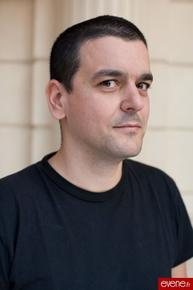

News sur le blog de Joann Sfar
Joann Sfar donne des news à propos du chat du rabbin sur son blog.
On y apprend que le dessin animé le chat du rabbin est fini. L'écriture du prochain album du chat du rabbin a déjà commencé mais Joann Sfar ne le dessinera qu'après avoir fini ses albums en cours.
Le post en entier:
Cher site internet,
Ca n'est pas très amusant de dire sur quels projets je travaille, puisqu'un livre ou un film, c'est long à faire. Alors bon, je travaille sur le livre de Chagall. Je dessine aussi la suite de l'Ancien Temps. Je commence aussi à travailler sur des choses cinématographiques au sujet desquelles je n'ai le droit de dire rien. Donc si je me borne à aborder mon boulot de ces jours-çi, ça va donner une note plutôt frustrante.
Et si je vous parlais plutôt des projets sur lesquels je ne travaille pas, je veux dire mes serpents de mer.
D'abord je voudrais revenir sur les séries auxquelles je n'ai pas encore donné de suite. C'est une vraie chose psychanalytique chez moi, je déteste qu'une histoire se finisse. Donc je marque toujours (à-suivre) à la fin de mes albums. Mais je ne parviens pas à me contraindre à donner des suites régulières aux histoires, je ne veux pas forcer les personnages à parler quand ils n'ont rien à me dire. Et si je ne mets pas le mot fin, c'est parce que dans mon esprit, ils reviendront. Très souvent, je ne sais pas quand et c'est une notion très abstraite, mais si je ne mets pas le mot fin, ça a du sens pour moi. Peut être que c'est même la seule raison pour laquelle j'aime écrire des histoires: dans un récit imaginaire, on a le droit de décider que les choses resteront suspendues. je me suis construit dans le rejet rageur de la mort, mes histoires jamais finies en sont le témoignage le plus limpide je crois. Mais ainsi que je l'ai dit à chaque fois qu'on m'interroge sur le sujet, les personnages voyagent d'un livre à l'autre. Je crois que Klezmer est la suite des Olives Noires, je crois que Gainsbourg est la suite de Pascin, je crois que Hava et Zlabya et la fille que vous verrez dans Chagall sont interprétées par la même petite voix que j'ai en tête, et j'ai l'impression que le chat et grand vampire et Yaacov sont un peu la même voix, comme si ces voix étaient des comédiens et que je les déguisais autrement à chaque fois. L'homme arbre et le rabbin, le Malka des Lions et le Baron de mes Fesses.
Au sujet de Donjon c'est tout de même un peu plus concret que ça. Nous ferons des déclarations communes avec Lewis mais d'ores et déjà (si ça peut calmer les mails ça aiderait!) on peut dire qu'on va s'y remettre très bientôt et qu'il y aura des nouvelles dans pas longtemps et qu'on a trouvé du temps et que l'envie d'y retourner est assez énorme. Qui va dessiner? vous verrez bien on fera des annonces officielles. On est en pourparlers avec Will Eisner et Jack Kirby mais ça n'a pas encore totalement abouti.
Sur les Olives Noires, Emmanuel Guibert m'a demandé il y a quelques mois de montrer que j'étais capable de lui écrire beaucoup plus que 46 pages. Il voudrait un long récit de plus de cent pages qui bouclerait le périple. Il me disait qu'on n'a pas le droit d'abandonner ce petit héros qui est dans Jerusalem en flammes et qui a envie de faire pipi. Je suis assez d'accord avec ça. Je n'ai pas de date. je ne promets rien. Mais il y aura d'autres albums c'est une certitude.
Au sujet de Socrate je vois à peu près où je veux aller, en gros sur les traces de John Milius et de Groucho Marx. Dès que Christophe pourra on s'y remet.
Le Chat du rabbin, j'ai écrit un long début d'album. Et un autre. Je voudrais le dessiner quand j'aurai fini mes quatre albums en cours, à savoir l'Ancien temps 2, Chagall, Klezmer 4 et le roman photo. Oui, ça veut dire pas demain!
Hé! Le dessin animé du chat est fini ! On ne compte plus les nuits blanches avec l'équipe. Mais c'est fini et c'est encore mieux que dans mes rêves. J'ai hâte de le faire voir.
Ah, tiens! Si je parlais des films que je ne parviens pas à monter! Ou alors que je n'essaie même pas sérieusement de faire parce que je me dis "personne ne va payer pour ça".
Mon premier serpent de mer est pour la télévision. Je n'ose pas dire pour la télévision française parce que ça n'est pas exactement une oeuvre francophone, et je ne suis pas certain que ce projet pourrait rivaliser avec des oeuvres de grande audience comme "Josephine ange gardien" ou "super nanny". Voilà : je voudrais faire une grande série télé entièrement en yiddish. Parce que c'est une langue morte et donc c'est un langage universel. J'adorerais diriger des comédiens qui parlent yiddish. Lorsque je vois des oeuvres comme Mad Men ou OZ, je me dis que la télévision seule peut apporter cette latence, cette pesanteur et cette capacité à regarder de près et longtemps des personnages. Ca me semble particulièrement adapté à la yiddishkeit, aux errances cruelles et drôles que pourraient vivre mes personnages de Klezmer. Donc voilà ça fait trois ans que je crie sous toutes les fenêtres des tennements français et amerloques que je voudrais faire une grande série télé en yiddish. Bien entendu comme les héros sont des musiciens ça jouerait tout le temps. Mais comme tout ça se déroule au moment du Potemkine il y aurait aussi le Bund et des baïonnettes et des langues coupées au couteau et des enfants qu'on jette par la fenêtre avec la bénédiction de la police d'Odessa. Est ce que vous vous rendez compte qu'on PEUT tourner à Odessa. Que c'est une ville dont certains quartiers, ceux dont parle Babel en particulier, n'ont pas changé depuis cette époque là. Parce qu'Odessa était la ville de Trotsky, parce que Staline détestait Trotsky et qu'il a décidé de laisser la ville intacte. Merci Staline. A chaque fois que la télévision française propose une fiction innovante ou de qualité, les chiffres d'audience sont catastrophiques et les gens préfèrent "les enfants de la télé". Je crois que la seule période historique qui intéresse les télespectateurs c'est les années quarante, ne me demandez pas pourquoi je n'en sais rien. Pour toutes ces raisons, à chaque fois que je parle de ma série télé en yiddish tout le monde me dit "n'essaye même pas". Ah, mais et la chutspah alors! Peut être un jour je vais le faire avec l'argent des amerloques, ou des russes qui sait, ils ont du pognon pour de grands projets patriotiques ceux là aussi. Et peut-être que si personne ne veut ça à la télé je vais en faire un film de cinéma. Mais dans longtemps alors. Parce que je préfère laisser traîner l'idée que ce rêve est pour la télévision. D'accord c'est très cher. D'accord personne ne gagnera d'argent là dessus. Mais moi comme spectateur, j'adorerais voir ça, une série sur la ville de Isaac Babel avec des images de chez Eisenstein.
L'autre projet infaisable, c'est mon grand film de vampires. Mais celui là je vais le faire. Un jour. Il fera vraiment extrèmement peur. Aux financiers surtout! Parce que tout le monde me dira "les français ne vont voir les films de genre que lorsqu'ils viennent d'amérique". Alors on fera comme monsieur Leterrier, on fera croire que ça vient d'Amérique.
C'est marrant, malgré la presse incroyable qu'a eu le film sur Gainsbourg, j'ai été très étonné du quasi silence des revues de cinéma fantastique. Ca leur a sans doute échappé mais mon film contient autant de plans avec de l'animatronique que le Labyrinthe de Pan. Je tiens beaucoup à ça, au label "film de monstres". Fait avec des marionnettes, des mécanismes, du mime. Je sais pas quand, je sais pas comment, mais Autochenille a méchamment envie de se mettre aussi sur le créneau films avec monstres. Entre DDT, Chris Clarke ou l'atelier 69 on a en Europe des gens capables de nous fabriquer un tas de monstres qui pourraient rendre jaloux le Hobbit. L'argent il y en a aussi. Ce qui manque, c'est la preuve que ce type de cinéma peut se fabriquer en France. Pour moi, c'est une certitude. Ca passe par un label. Ca passe sans doute à la fois par des tout petits films et aussi par des choses énormes. Je crois qu'on peut faire des films de chez Troma en France. Je crois qu'on peut aussi faire du Dark Crystal. Je crois enfin qu'on peut faire du Lord Of The Rings si ça nous prend. Je veux dire que les talents sont là, à chaque poste. Ces projets là restent souvent stationnés en rase campagne parce qu'on se dit que le public ne suivra pas...sous entendu "le public ne suivra pas si c'est français". Je ne sais pas si c'est vrai. Je sais juste que c'est des choses que j'irais voir avec enthousiasme, comme spectateur.
Voilà. C'est les trucs que j'ai envie de faire. Pas tout seul, n'est ce pas! c'est pour ça qu'on a créé une société de production. On veut rassembler des gens bons (d'aoste hihi!).
Donc, comme vous aurez compris, je ne travaille sur aucun des projets évoqués plus haut. Je travaille sur deux choses cinématographiques secrètes et comme c'est secret, forcément, je les dis pas. C'est pas parce qu'on se met à accepter les femmes au Grand Orient que tout d'un coup il n'y a plus de secrets!!!
Sans ça j'ai pris l'avion de Varsovie quelques heures après le chef d'état polonais et tout le monde a été bien rassuré d'aterrir sain et sauf à Istanbul, parce qu'on était dans la même compagnie aérienne. Oui, je suis à Istanbul et c'est merveilleux. Si c'est difficile d'intégrer la Turquie à l'Europe, on pourrait peut-être envisager d'intégrer l'Europe à la Turquie en tout cas c'est assez rare que je me sente chez moi quelque part et Istanbul ça m'a fait comme ma maison. C'est drôle parce qu'au début de mon travail de bandes dessinées j'avais inventé un personnage qui s'appelait Ossour et qui était turc. Peut-être que je vais le faire revivre.
Joann
Le post sur le blog de Joann Sfar
< Nouvel ex libris - News sur le blog de Joann Sfar - Édition spéciale de La Bar-... >